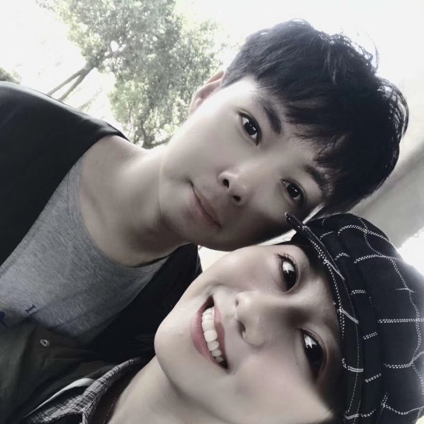
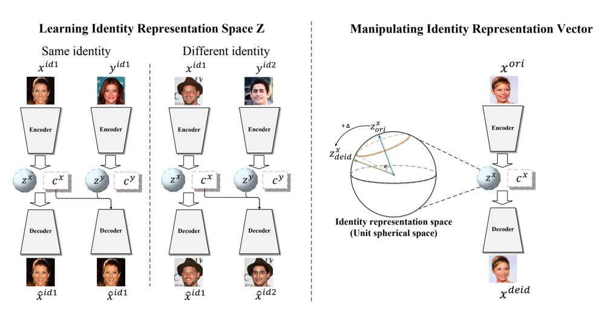
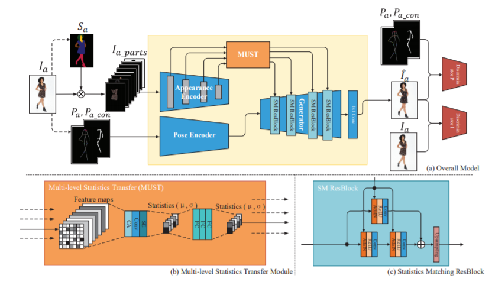
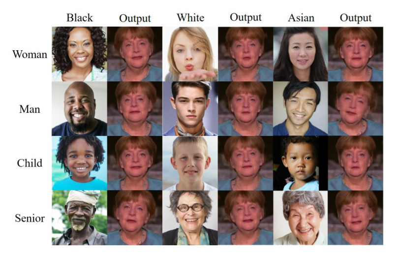

|  |
Tianxiang Ma
|
Biography
I am a Ph.D. Candidate of CRIPAC (led by Prof. Tieniu Tan), National Laboratory of Pattern Recognition (NLPR), Institute of Automation, Chinese Academy of Sciences (CASIA) under the supervision of Prof. Tieniu Tan and Prof. Dong Jing. Before that, I received my Bachelor degree from Zhengzhou University (ZZU) in 2019 under the supervision of Prof. Ronghui Luo and Dr. Yongzhi Tian. My current research interests mainly lie in the fields of deep learning, especially applying generative adversarial models to computer vision.
Education
 |
University of Chinese Academy of Sciences (UCAS) Sep. 2019 - Now |
|
Zhengzhou University (ZZU) Sep. 2015 - Jun. 2019 |
Publications
|  |
AdaDeId: Adjust Your Identity Attribute Freely |
 |
DesignerGAN: Sketch Your Own Photo |
|  |
MUST-GAN: Multi-level Statistics Transfer for Self-driven Person Image Generation |
|  |
Any-to-one Face Reenactment Based on Conditional Generative Adversarial Network |
Selected Honors and Awards
2021, Outstanding Student, University of Chinese Academy of Sciences
2019, 2nd Place Winner of Competition on Adversarial Attacks and Defenses (CAAD) CTF in GeekPwn 2019
2019, Outstanding Undergraduate Thesis of Zhengzhou University
2019, Outstanding Graduates of Zhengzhou University and Henan Province
2017, National Scholarship
2018,2016, 1st prize of Zhengzhou University Student Scholarship
2016, Zhong An Hong Mian Scholarship of Henan Province
Academic Services
Journal Reviewer
IEEE Transactions on Multimedia
Conference Reviewer
2022 Conference on Computer Vision and Pattern Recognition